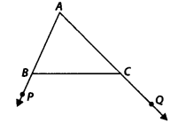
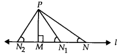

Ex 7.2 Class 9 Maths
NCERT Solutions for Class 9 Maths Chapter 7 Triangles Ex 7.1 are part of NCERT Solutions for Class 9 Maths. Here we have given NCERT Solutions for Class 9 Maths Chapter 7 Triangles Ex 7.1.
NCERT Solutions for Class 9 Maths Chapter 7 Triangles Ex 7.1
Ex 7.1 Class 9 Maths Question 1.
In quadrilateral ACBD, AC = AD and AB bisects ∠ A (see figure). Show that ∆ABC ≅ ∆ABD. What can you say about BC and BD?
Solution:
In quadrilateral ACBD, we have AC = AD and AB being the bisector of ∠A.
Now, In ∆ABC and ∆ABD,
AC = AD (Given)
∠ CAB = ∠ DAB ( AB bisects ∠ CAB)
and AB = AB (Common)
∴ ∆ ABC ≅ ∆ABD (By SAS congruence axiom)
∴ BC = BD (By CPCT)
Ex 7.1 Class 9 Maths Question 2.
ABCD is a quadrilateral in which AD = BC and ∠ DAB = ∠ CBA (see figure). Prove that
(i) ∆ABD ≅ ∆BAC
(ii) BD = AC
(iii) ∠ABD = ∠ BAC
Solution:
In quadrilateral ACBD, we have AD = BC and ∠ DAB = ∠ CBA
(i) In ∆ ABC and ∆ BAC,
AD = BC (Given)
∠DAB = ∠CBA (Given)
AB = AB (Common)
∴ ∆ ABD ≅ ∆BAC (By SAS congruence)
(ii) Since ∆ABD ≅ ∆BAC
⇒ BD = AC [By C.P.C.T.]
(iii) Since ∆ABD ≅ ∆BAC
⇒ ∠ABD = ∠BAC [By C.P.C.T.]
Ex 7.1 Class 9 Maths Question 3.
AD and BC are equal perpendiculars to a line segment AB (see figure). Show that CD bisects AB.
Solution:
In ∆BOC and ∆AOD, we have
∠BOC = ∠AOD
BC = AD [Given]
∠BOC = ∠AOD [Vertically opposite angles]
∴ ∆OBC ≅ ∆OAD [By AAS congruency]
⇒ OB = OA [By C.P.C.T.]
i.e., O is the mid-point of AB.
Thus, CD bisects AB.
Ex 7.1 Class 9 Maths Question 4.
l and m are two parallel lines intersected by another pair of parallel lines p and q (see figure). Show that ∆ABC = ∆CDA.
Solution:
∵ p || q and AC is a transversal,
∴ ∠BAC = ∠DCA …(1) [Alternate interior angles]
Also l || m and AC is a transversal,
∴ ∠BCA = ∠DAC …(2)
[Alternate interior angles]
Now, in ∆ABC and ∆CDA, we have
∠BAC = ∠DCA [From (1)]
CA = AC [Common]
∠BCA = ∠DAC [From (2)]
∴ ∆ABC ≅ ∆CDA [By ASA congruency]
Ex 7.1 Class 9 Maths Question 5.
Line l is the bisector of an ∠ A and ∠ B is any point on l. BP and BQ are perpendiculars from B to the arms of LA (see figure). Show that
(i) ∆APB ≅ ∆AQB
(ii) BP = BQ or B is equidistant from the arms ot ∠A.
Solution:
We have, l is the bisector of ∠QAP.
∴ ∠QAB = ∠PAB
∠Q = ∠P [Each 90°]
∠ABQ = ∠ABP
[By angle sum property of A]
Now, in ∆APB and ∆AQB, we have
∠ABP = ∠ABQ [Proved above]
AB = BA [Common]
∠PAB = ∠QAB [Given]
∴ ∆APB ≅ ∆AQB [By ASA congruency]
Since ∆APB ≅ ∆AQB
⇒ BP = BQ [By C.P.C.T.]
i. e., [Perpendicular distance of B from AP]
= [Perpendicular distance of B from AQ]
Thus, the point B is equidistant from the arms of ∠A.
Ex 7.1 Class 9 Maths Question 6.
In figure, AC = AE, AB = AD and ∠BAD = ∠EAC. Show that BC = DE.
Solution:
We have, ∠BAD = ∠EAC
Adding ∠DAC on both sides, we have
∠BAD + ∠DAC = ∠EAC + ∠DAC
⇒ ∠BAC = ∠DAE
Now, in ∆ABC and ∆ADE. we have
∠BAC = ∠DAE [Proved above]
AB = AD [Given]
AC = AE [Given]
∴ ∆ABC ≅ ∆ADE [By SAS congruency]
⇒ BC = DE [By C.P.C.T.]
Ex 7.1 Class 9 Maths Question 7.
AS is a line segment and P is its mid-point. D and E are points on the same side of AB such that ∠ BAD = ∠ ABE and ∠ EPA = ∠ DPB. (see figure). Show that
(i) ∆DAP ≅ ∆EBP
(ii) AD = BE
Solution:
We have, P is the mid-point of AB.
∴ AP = BP
∠EPA = ∠DPB [Given]
Adding ∠EPD on both sides, we get
∠EPA + ∠EPD = ∠DPB + ∠EPD
⇒ ∠APD = ∠BPE
(i) Now, in ∆DAP and ∆EBP, we have
∠PAD = ∠PBE [ ∵∠BAD = ∠ABE]
AP = BP [Proved above]
∠DPA = ∠EPB [Proved above]
∴ ∆DAP ≅ ∆EBP [By ASA congruency]
(ii) Since, ∆ DAP ≅ ∆ EBP
⇒ AD = BE [By C.P.C.T.]
Ex 7.1 Class 9 Maths Question 8.
In right triangle ABC, right angled at C, M is the mid-point of hypotenuse AB. C is joined to M and produced to a point D such that DM = CM. Point D is joined to point B (see figure). Show that
(i) ∆AMC ≅ ∆BMD
(ii) ∠DBC is a right angle
(iii) ∆DBC ≅ ∆ACB
(iv) CM = \(\frac { 1 }{ 2 }\) AB
Solution:
Since M is the mid – point of AB.
∴ BM = AM
(i) In ∆AMC and ∆BMD, we have
CM = DM [Given]
∠AMC = ∠BMD [Vertically opposite angles]
AM = BM [Proved above]
∴ ∆AMC ≅ ∆BMD [By SAS congruency]
(ii) Since ∆AMC ≅ ∆BMD
⇒ ∠MAC = ∠MBD [By C.P.C.T.]
But they form a pair of alternate interior angles.
∴ AC || DB
Now, BC is a transversal which intersects parallel lines AC and DB,
∴ ∠BCA + ∠DBC = 180° [Co-interior angles]
But ∠BCA = 90° [∆ABC is right angled at C]
∴ 90° + ∠DBC = 180°
⇒ ∠DBC = 90°
(iii) Again, ∆AMC ≅ ∆BMD [Proved above]
∴ AC = BD [By C.P.C.T.]
Now, in ∆DBC and ∆ACB, we have
BD = CA [Proved above]
∠DBC = ∠ACB [Each 90°]
BC = CB [Common]
∴ ∆DBC ≅ ∆ACB [By SAS congruency]
(iv) As ∆DBC ≅ ∆ACB
DC = AB [By C.P.C.T.]
But DM = CM [Given]
∴ CM = \(\frac { 1 }{ 2 }\)DC = \(\frac { 1 }{ 2 }\)AB
⇒ CM = \(\frac { 1 }{ 2 }\)AB
NCERT Solutions for Class 9 Maths Chapter 7 Triangles (त्रिभुज) (Hindi Medium) Ex 7.1


NCERT Solutions for Class 9 Maths Chapter 7 Triangles Ex 7.2
Ex 7.2 Class 9 Maths Question 1.
In an isosceles triangle ABC, with AB = AC, the bisectors of ∠B and ∠C intersect each other at 0. Join A to 0. Show that
(i) OB = OC
(ii) AO bisects ∠A
Solution:
i) in ∆ABC, we have
AB = AC [Given]
∴ ∠ABC = ∠ACB [Angles opposite to equal sides of a A are equal]
⇒ \(\frac { 1 }{ 2 }\)∠ABC = \(\frac { 1 }{ 2 }\)∠ACB
or ∠OBC = ∠OCB
⇒ OC = OB [Sides opposite to equal angles of a ∆ are equal]
(ii) In ∆ABO and ∆ACO, we have
AB = AC [Given]
∠OBA = ∠OCA [ ∵\(\frac { 1 }{ 2 }\)∠B = \(\frac { 1 }{ 2 }\)∠C]
OB = OC [Proved above]
∆ABO ≅ ∆ACO [By SAS congruency]
⇒ ∠OAB = ∠OAC [By C.P.C.T.]
⇒ AO bisects ∠A.
Ex 7.2 Class 9 Maths Question 2.
In ∆ABC, AD is the perpendicular bisector of BC (see figure). Show that ∆ ABC is an isosceles triangle in which AB = AC.
Solution:
Since AD is bisector of BC.
∴ BD = CD
Now, in ∆ABD and ∆ACD, we have
AD = DA [Common]
∠ADB = ∠ADC [Each 90°]
BD = CD [Proved above]
∴ ∆ABD ≅ ∆ACD [By SAS congruency]
⇒ AB = AC [By C.P.C.T.]
Thus, ∆ABC is an isosceles triangle.
Ex 7.2 Class 9 Maths Question 3.
ABC is an isosceles triangle in which altitudes BE and CF are drawn to equal sides AC and AB respectively (see figure). Show that these altitudes are equal.
Solution:
∆ABC is an isosceles triangle.
∴ AB = AC
⇒ ∠ACB = ∠ABC [Angles opposite to equal sides of a A are equal]
⇒ ∠BCE = ∠CBF
Now, in ∆BEC and ∆CFB
∠BCE = ∠CBF [Proved above]
∠BEC = ∠CFB [Each 90°]
BC = CB [Common]
∴ ∆BEC ≅ ∆CFB [By AAS congruency]
So, BE = CF [By C.P.C.T.]
Ex 7.2 Class 9 Maths Question 4.
ABC is a triangle in which altitudes BE and CF to sides AC and AB are equal (see figure).
Show that
(i) ∆ABE ≅ ∆ACF
(ii) AB = AC i.e., ABC is an isosceles triangle.
Solution:
(i) In ∆ABE and ∆ACE, we have
∠AEB = ∠AFC
[Each 90° as BE ⊥ AC and CF ⊥ AB]
∠A = ∠A [Common]
BE = CF [Given]
∴ ∆ABE ≅ ∆ACF [By AAS congruency]
(ii) Since, ∆ABE ≅ ∆ACF
∴ AB = AC [By C.P.C.T.]
⇒ ABC is an isosceles triangle.
Ex 7.2 Class 9 Maths Question 5.
ABC and DBC are isosceles triangles on the same base BC (see figure). Show that ∠ ABD = ∠ACD.
Solution:
In ∆ABC, we have
AB = AC [ABC is an isosceles triangle]
∴ ∠ABC = ∠ACB …(1)
[Angles opposite to equal sides of a ∆ are equal]
Again, in ∆BDC, we have
BD = CD [BDC is an isosceles triangle]
∴ ∠CBD = ∠BCD …(2)
[Angles opposite to equal sides of a A are equal]
Adding (1) and (2), we have
∠ABC + ∠CBD = ∠ACB + ∠BCD
⇒ ∠ABD = ∠ACD.
Ex 7.2 Class 9 Maths Question 6.
∆ABC is an isosceles triangle in which AB = AC. Side BA is produced to D such that AD = AB (see figure). Show that ∠BCD is a right angle.
Solution:
AB = AC [Given] …(1)
AB = AD [Given] …(2)
From (1) and (2), we have
AC = AD
Now, in ∆ABC, we have
∠ABC + ∠ACB + ∠BAC = 180° [Angle sum property of a A]
⇒ 2∠ACB + ∠BAC = 180° …(3)
[∠ABC = ∠ACB (Angles opposite to equal sides of a A are equal)]
Similarly, in ∆ACD,
∠ADC + ∠ACD + ∠CAD = 180°
⇒ 2∠ACD + ∠CAD = 180° …(4)
[∠ADC = ∠ACD (Angles opposite to equal sides of a A are equal)]
Adding (3) and (4), we have
2∠ACB + ∠BAC + 2 ∠ACD + ∠CAD = 180° +180°
⇒ 2[∠ACB + ∠ACD] + [∠BAC + ∠CAD] = 360°
⇒ 2∠BCD +180° = 360° [∠BAC and ∠CAD form a linear pair]
⇒ 2∠BCD = 360° – 180° = 180°
⇒ ∠BCD = \(\frac { { 180 }^{ \circ } }{ 2 } \) = 90°
Thus, ∠BCD = 90°
Ex 7.2 Class 9 Maths Question 7.
ABC is a right angled triangle in which ∠A = 90° and AB = AC, find ∠B and ∠C.
Solution:
In ∆ABC, we have AB = AC [Given]
∴ Their opposite angles are equal.
⇒ ∠ACB = ∠ABC
Now, ∠A + ∠B + ∠C = 180° [Angle sum property of a ∆]
⇒ 90° + ∠B + ∠C = 180° [∠A = 90°(Given)]
⇒ ∠B + ∠C= 180°- 90° = 90°
But ∠B = ∠C
∠B = ∠C = \(\frac { { 90 }^{ \circ } }{ 2 } \) = 45°
Thus, ∠B = 45° and ∠C = 45°
Ex 7.2 Class 9 Maths Question 8.
Show that the angles of an equilateral triangle are 60° each.
Solution:
In ∆ABC, we have
AB = BC = CA
[ABC is an equilateral triangle]
AB = BC
⇒ ∠A = ∠C …(1) [Angles opposite to equal sides of a A are equal]
Similarly, AC = BC
⇒ ∠A = ∠B …(2)
From (1) and (2), we have
∠A = ∠B = ∠C = x (say)
Since, ∠A + ∠B + ∠C = 180° [Angle sum property of a A]
∴ x + x + x = 180o
⇒ 3x = 180°
⇒ x = 60°
∴ ∠A = ∠B = ∠C = 60°
Thus, the angles of an equilateral triangle are 60° each.
NCERT Solutions for Class 9 Maths Chapter 7 Triangles Ex 7.3
Ex 7.3 Class 9 Maths Question 1.
∆ABC and ∆DBC are two isosceles triangles on the same base BC and vertices A and D are on the same side of BC (see figure). If AD is extended to intersect BC at P, show that
(i) ∆ABD ≅ ∆ACD
(ii) ∆ABP ≅ ∆ACP
(iii) AP bisects ∠A as well as ∠D
(iv) AP is the perpendicular bisector of BC.
Solution:
(i) In ∆ABD and ∆ACD, we have
AB = AC [Given]
AD = DA [Common]
BD = CD [Given]
∴ ∆ABD ≅ ∆ACD [By SSS congruency]
∠BAD = ∠CAD [By C.P.C.T.] …(1)
(ii) In ∆ABP and ∆ACP, we have
AB = AC [Given]
∠BAP = ∠CAP [From (1)]
∴ AP = PA [Common]
∴ ∆ABP ≅ ∆ACP [By SAS congruency]
(iii) Since, ∆ABP ≅ ∆ACP
⇒ ∠BAP = ∠CAP [By C.P.C.T.]
∴ AP is the bisector of ∠A.
Again, in ∆BDP and ∆CDP,
we have BD = CD [Given]
DP = PD [Common]
BP = CP [ ∵ ∆ABP ≅ ∆ACP]
⇒ A BDP = ACDP [By SSS congruency]
∴ ∠BDP = ∠CDP [By C.P.C.T.]
⇒ DP (or AP) is the bisector of ∠BDC
∴ AP is the bisector of ∠A as well as ∠D.
(iv) As, ∆ABP ≅ ∆ACP
⇒ ∠APS = ∠APC, BP = CP [By C.P.C.T.]
But ∠APB + ∠APC = 180° [Linear Pair]
∴ ∠APB = ∠APC = 90°
⇒ AP ⊥ BC, also BP = CP
Hence, AP is the perpendicular bisector of BC.
Ex 7.3 Class 9 Maths Question 2.
AD is an altitude of an isosceles triangle ABC in which AB = AC. Show that
(i) AD bisects BC
(ii) AD bisects ∠A
Solution:
(i) In right ∆ABD and ∆ACD, we have
AB =AC [Given]
∠ADB = ∠ADC [Each 90°]
AD = DA [Common]
∴ ∆ABD ≅ ∆ACD [By RHS congruency]
So, BD = CD [By C.P.C.T.]
⇒ D is the mid-point of BC or AD bisects BC.
(ii) Since, ∆ABD ≅ ∆ACD,
⇒ ∠BAD = ∠CAD [By C.P.C.T.]
So, AD bisects ∠A
Ex 7.3 Class 9 Maths Question 3.
Two sides AB and BC and median AM of one triangle ABC are respectively equal to sides PQ and OR and median PN of ∆PQR (see figure). Show that
(i) ∆ABC ≅ ∆PQR
(ii) ∆ABM ≅ ∆PQN
Solution:
In ∆ABC, AM is the median.
∴BM = \(\frac { 1 }{ 2 }\) BC ……(1)
In ∆PQR, PN is the median.
∴ QN = \(\frac { 1 }{ 2 }\)QR …(2)
And BC = QR [Given]
⇒ \(\frac { 1 }{ 2 }\)BC = \(\frac { 1 }{ 2 }\)QR
⇒ BM = QN …(3) [From (1) and (2)]
(i) In ∆ABM and ∆PQN, we have
AB = PQ , [Given]
AM = PN [Given]
BM = QN [From (3)]
∴ ∆ABM ≅ ∆PQN [By SSS congruency]
(ii) Since ∆ABM ≅ ∆PQN
⇒ ∠B = ∠Q …(4) [By C.P.C.T.]
Now, in ∆ABC and ∆PQR, we have
∠B = ∠Q [From (4)]
AB = PQ [Given]
BC = QR [Given]
∴ ∆ABC ≅ ∆PQR [By SAS congruency]
Ex 7.3 Class 9 Maths Question 4.
BE and CF are two equal altitudes of a triangle ABC. Using RHS congruence rule, prove that the triangle ABC is isosceles.
Solution:
Since BE ⊥ AC [Given]
∴ BEC is a right triangle such that ∠BEC = 90°
Similarly, ∠CFB = 90°
Now, in right ∆BEC and ∆CFB, we have
BE = CF [Given]
BC = CB [Common hypotenuse]
∠BEC = ∠CFB [Each 90°]
∴ ∆BEC ≅ ∆CFB [By RHS congruency]
So, ∠BCE = ∠CBF [By C.P.C.T.]
or ∠BCA = ∠CBA
Now, in ∆ABC, ∠BCA = ∠CBA
⇒ AB = AC [Sides opposite to equal angles of a ∆ are equal]
∴ ABC is an isosceles triangle.
Ex 7.3 Class 9 Maths Question 5.
ABC is an isosceles triangle with AB = AC. Draw AP ⊥ BC to show that ∠B = ∠C.
Solution:
We have, AP ⊥ BC [Given]
∠APB = 90° and ∠APC = 90°
In ∆ABP and ∆ACP, we have
∠APB = ∠APC [Each 90°]
AB = AC [Given]
AP = AP [Common]
∴ ∆ABP ≅ ∆ACP [By RHS congruency]
So, ∠B = ∠C [By C.P.C.T.]
NCERT Solutions for Class 9 Maths Chapter 7 Triangles Ex 7.4
Ex 7.4 Class 9 Maths Question 1.
Show that in a right angled triangle, the hypotenuse is the longest side.
Solution:
Let us consider ∆ABC such that ∠B = 90°
∴ ∠A + ∠B + ∠C = 180°
⇒ ∠A + 90°-+ ∠C = 180°
⇒ ∠A + ∠C = 90°
⇒∠A + ∠C = ∠B
∴ ∠B > ∠A and ∠B > ∠C
⇒ Side opposite to ∠B is longer than the side opposite to ∠A
i.e., AC > BC.
Similarly, AC > AB.
Therefore, we get AC is the longest side. But AC is the hypotenuse of the triangle. Thus, the hypotenuse is the longest side.
Ex 7.4 Class 9 Maths Question 2.
In figure, sides AB and AC of ∆ABC are extended to points P and Q respectively. Also, ∠PBC < ∠QCB. Show that AC > AB.

Solution:
∠ABC + ∠PBC = 180° [Linear pair]
and ∠ACB + ∠QCB = 180° [Linear pair]
But ∠PBC < ∠QCB [Given] ⇒ 180° – ∠PBC > 180° – ∠QCB
⇒ ∠ABC > ∠ACB
The side opposite to ∠ABC > the side opposite to ∠ACB
⇒ AC > AB.
Ex 7.4 Class 9 Maths Question 3.
In figure, ∠B <∠ A and ∠C <∠ D. Show that AD < BC.
Solution: Since ∠A > ∠B [Given]
∴ OB > OA …(1)
[Side opposite to greater angle is longer]
Similarly, OC > OD …(2)
Adding (1) and (2), we have
OB + OC > OA + OD
⇒ BC > AD
Ex 7.4 Class 9 Maths Question 4.
AB and CD are respectively the smallest and longest sides of a quadrilateral ABCD (see figure). Show that ∠ A > ∠C and ∠B >∠D.
Solution:
Let us join AC.
Now, in ∆ABC, AB < BC [∵ AB is the smallest side of the quadrilateral ABCD] ⇒ BC > AB
⇒ ∠BAC > ∠BCA …(1)
[Angle opposite to longer side of A is greater]
Again, in ∆ACD, CD > AD
[ CD is the longest side of the quadrilateral ABCD]
⇒ ∠CAD > ∠ACD …(2)
[Angle opposite to longer side of ∆ is greater]
Adding (1) and (2), we get
∠BAC + ∠CAD > ∠BCA + ∠ACD
⇒ ∠A > ∠C
Similarly, by joining BD, we have ∠B > ∠D.
Ex 7.4 Class 9 Maths Question 5.
In figure, PR > PQ and PS bisect ∠QPR. Prove that ∠PSR >∠PSQ.
Solution:
In ∆PQR, PS bisects ∠QPR [Given]
∴ ∠QPS = ∠RPS
and PR > PQ [Given]
⇒ ∠PQS > ∠PRS [Angle opposite to longer side of A is greater]
⇒ ∠PQS + ∠QPS > ∠PRS + ∠RPS …(1) [∵∠QPS = ∠RPS]
∵ Exterior ∠PSR = [∠PQS + ∠QPS]
and exterior ∠PSQ = [∠PRS + ∠RPS]
[An exterior angle is equal to the sum of interior opposite angles]
Now, from (1), we have
∠PSR = ∠PSQ.
Ex 7.4 Class 9 Maths Question 6.
Show that of all line segments drawn from a given point not on it, the perpendicular line segment is the shortest.
Solution:
Let us consider the ∆PMN such that ∠M = 90°

Since, ∠M + ∠N+ ∠P = 180°
[Sum of angles of a triangle is 180°]
∵ ∠M = 90° [PM ⊥ l]
So, ∠N + ∠P = ∠M
⇒ ∠N < ∠M
⇒ PM < PN …(1)
Similarly, PM < PN1 …(2)
and PM < PN2 …(3)
From (1), (2) and (3), we have PM is the smallest line segment drawn from P on the line l. Thus, the perpendicular line segment is the shortest line segment drawn on a line from a point not on it.
NCERT Solutions for Class 9 Maths Chapter 7 Triangles Ex 7.5
Ex 7.5 Class 9 Maths Question 1.
ABC is a triangle. Locate a point in the interior of ∆ ABC which is equidistant from all the vertices of ∆ ABC.
Solution:
Let us consider a ∆ABC.
Draw l, the perpendicular bisector of AB.
Draw m, the perpendicular bisector of BC.
Let the two perpendicular bisectors l and m meet at O.
O is the required point which is equidistant from A, B and C.
Note: If we draw a circle with centre O and radius OB or OC, then it will pass through A, B and C. The point O is called circumcentre of the triangle.
Ex 7.5 Class 9 Maths Question 2.
In a triangle locate a point in its interior which is equidistant from all the sides of the triangle.
Solution:
Let us consider a ∆ABC.
Draw m, the bisector of ∠C.
Let the two bisectors l and m meet at O.
Thus, O is the required point which is equidistant from the sides of ∆ABC.
Note: If we draw OM ⊥ BC and draw a circle with O as centre and OM as radius, then the circle will touch the sides of the triangle. Point O is called incentre of the triangle.
Ex 7.5 Class 9 Maths Question 3.
In a huge park, people are concentrated at three points (see figure)

A: where these are different slides and swings for children.
B: near which a man-made lake is situated.
C: which is near to a large parking and exist.
Where should an ice-cream parlor be set? up so that maximum number of persons can approach it?
[Hint The parlour should be equidistant from A, B and C.]
Solution:
Let us join A and B, and draw l, the perpendicular bisector of AB.
Now, join B and C, and draw m, the perpendicular bisector of BC. Let the perpendicular bisectors l and m meet at O.
The point O is the required point where the ice cream parlour be set up.
Note: If we join A and C and draw the perpendicular bisector, then it will also meet (or pass through) the point O.
Ex 7.5 Class 9 Maths Question 4.
Complete the hexagonal and star shaped Rangolies [see Fig. (i) and (ii)] by filling them with as many equilateral triangles of side 1 cm as you can. Count the number of triangles in each case. Which has more triangles?
Solution:
It is an activity.
We require 150 equilateral triangles of side 1 cm in the Fig. (i) and 300 equilateral triangles in the Fig. (ii).
∴ The Fig. (ii) has more triangles.
NCERT Solutions for Class 9 Maths All Chapters
- Chapter 1 Number systems
- Chapter 2 Polynomials
- Chapter 3 Coordinate Geometry
- Chapter 4 Linear Equations in Two Variables
- Chapter 5 Introduction to Euclid Geometry
- Chapter 6 Lines and Angles
- Chapter 7 Triangles
- Chapter 8 Quadrilaterals
- Chapter 9 Areas of Parallelograms and Triangles
- Chapter 10 Circles
- Chapter 11 Constructions
- Chapter 12 Heron’s Formula
- Chapter 13 Surface Areas and Volumes
- Chapter 14 Statistics
- Chapter 15 Probability
- Class 9 Maths (Download PDF)
We hope the NCERT Solutions for Class 9 Maths Chapter 7 Triangles Ex 7.1 help you. If you have any query regarding NCERT Solutions for Class 9 Maths Chapter 7 Triangles Ex 7.1, drop a comment below and we will get back to you at the earliest.